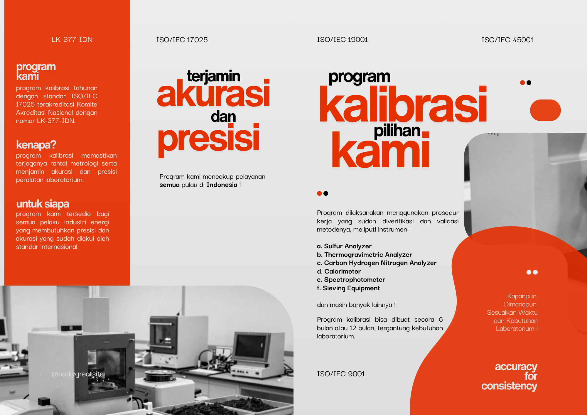
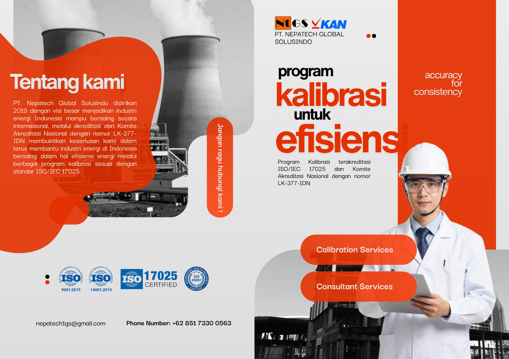
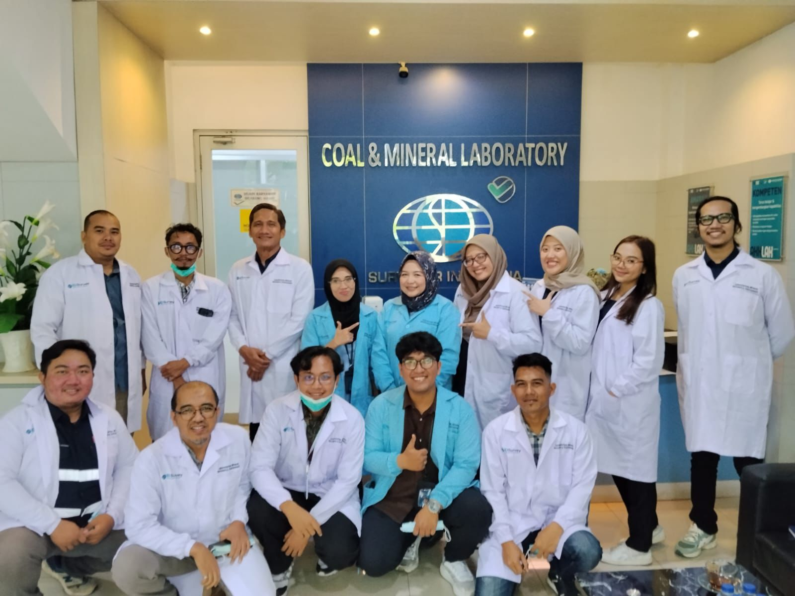
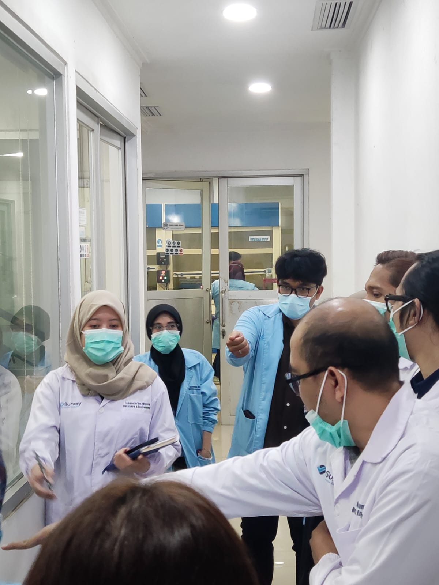

Solusi terpercaya untuk kebutuhan konsultasi, kalibrasi, dan laboratory supply berstandar internasional.
"Terdepan dan terpercaya dalam menyediakan solusi konsultasi, kalibrasi, dan laboratory supply yang berstandar internasional"
Penyedia jasa kalibrasi dan konsultan serta suplai kebutuhan laboratorium.
Bekasi, 09 Mei 2026 – PT. Nepatech Global Solusindo menghadirkan rangkaian program kalibrasi peralatan laboratorium yang sudah di akreditasi dan diakui oleh lembaga Komite Akreditasi Nasional dengan nomor LK-377-IDN. [cite: 19] Program ini merupakan upaya dalam menjaga rantai ketertelusuran metrologi dan peningkatan efisiensi serta akurasi pengujian pada operasional laboratorium batubara Pembangkit Listrik Tenaga Uap (PLTU) di seluruh Indonesia. [cite: 19]
Program ini mencakup kalibrasi seluruh peralatan instrumen laboratorium batubara yang digunakan dalam proses analisa kualitas batubara, dimana hasil pengukuran yang akurat menentukan efisiensi dari pembakaran dan penggunaan energi serta stabilitas pembangkit. [cite: 20] Melalui pendekatan kalibrasi yang terstandarisasi dan terdokumentasi, pemiliki pembangkit dapat memastikan bahwa seluruh peralatan analisanya dapat bekerja sesuai spesifikasi dan memiliki tingkat ketertelusuran pengukuran yang memenuhi standar mutu internasional ISO/IEC 17025. [cite: 21]
Yasser Arafat, Manajer Operasional dan Technical Advisor dari PT. Nepatech Global Solusindo menyampaikan, "Kesalahan dalam pengujian di laboratorium dapat berdampak besar pada efisiensi pembakaran yang akhirnya berpengaruh pada operasional pembangkit. [cite: 22] Program kalibrasi tahunan peralatan laboratorium ini bertujuan untuk menjaga kualitas dan akurasi dari hasil analisa peralatan laboratorium sehingga pengambilan keputusan bagi operasional pembangkit lebih cepat dan tepat." [cite: 22]
Program kalibrasi yang disediakan mencakup berbagai lingkup, di antaranya: Temperature, Massa, Kalorimeter, Spectrophotometer, Sulfur Analyzer, Carbon, Hydrogen, Nitrogen Analyzer, Sieving Equipment, dan instrumen lain terkait laboratorium batubara. [cite: 23-33] Seluruh proses kalibrasi dilakukan dengan mengacu pada prosedur teknis dan standard yang sudah diakui mutunya secara internasional. [cite: 34]
Dokumentasi brosur produk dan aktivitas komunikasi operasional perusahaan.

Brosur Program Kalibrasi (Hal. 1)

Brosur Tentang Kami & Layanan (Hal. 2)

Tim di Coal & Mineral Laboratory

Aktivitas Diskusi Teknis Laboratorium